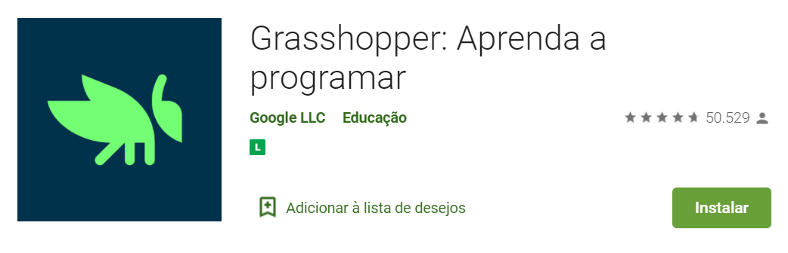
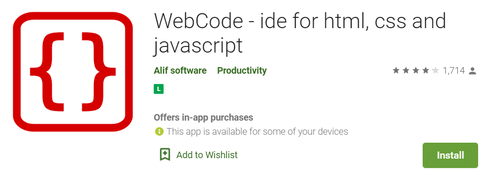

Qual será a diferença entre HTML, CSS e Javascript? Será que todas de fato são linguagens de programação? Descubra mais aqui nesse artigo!
Alura - Artigos Front-endGuia sobre HTML, CSS e Javascript: por onde começar
Digital House - GuiaO Grasshopper é a melhor maneira de começar sua aventura na programação, com jogos divertidos e rápidos em seu celular que te ensinam a escrever JavaScript.
WebCode em um ambiente de desenvolvimento integrado para a web com suporte para html, css, javascript.
Natalia Gass